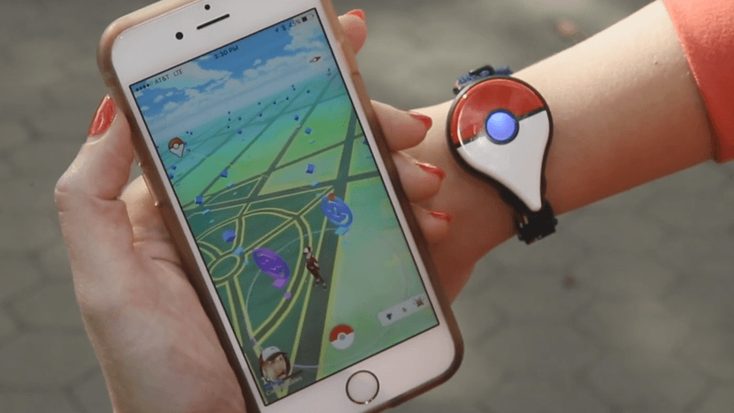
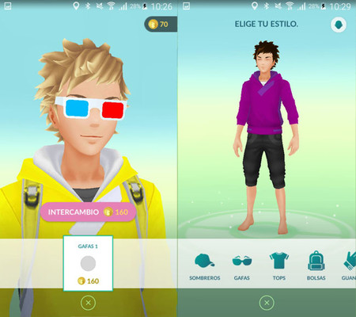
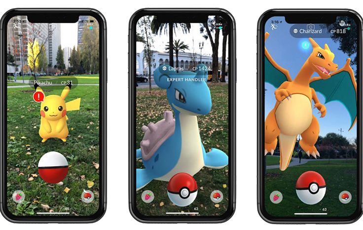

A diferencia de los juegos tradicionales o las conocidas aplicaciones para jugar desde tu teléfono móvil, Pokémon Go se juega en calles, parques o plazas. Anima a los jugadores a salir al mundo real a explorar y atrapar a los pokémons que se ocultan en estos lugares. Este juego de realidad aumentada ha utilizado lugares del mundo real, como Nueva York, París o las regiones japonesas de Hokkaido y Kanto, como fuente de inspiración para crear los escenarios fantásticos en los que se desarrollan. Aunque esta novedad pueda parecer atractiva, está generando accidentes y otros altercados.
A medida que el jugador se mueva, el móvil vibrará para avisarle que está cerca de un pokémon. Esto lo consigue gracias a el sistema de GPS del teléfono y al reloj, para detectar dónde y cuándo está el usuario para hacerle 'encontrar' una criatura del juego. Cuanto más se mueva el jugador, más tipos de personaje le aparecerán. Esta forma de jugar, conocida como realidad aumentada, es una de las claves del éxito del juego.
La 'app' se puede descargar gratuitamente en la App Store y en Google Play. Sin embargo, como en todo juego que se precie, si el usuario quiere mejorar la experiencia y optar a más funciones, podrá comprarlas en la aplicación. El dinero real será pokémonedas, que se pueden intercambiar por mejoras y extras.
